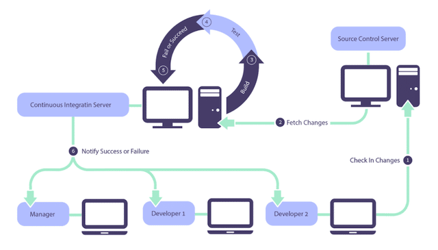
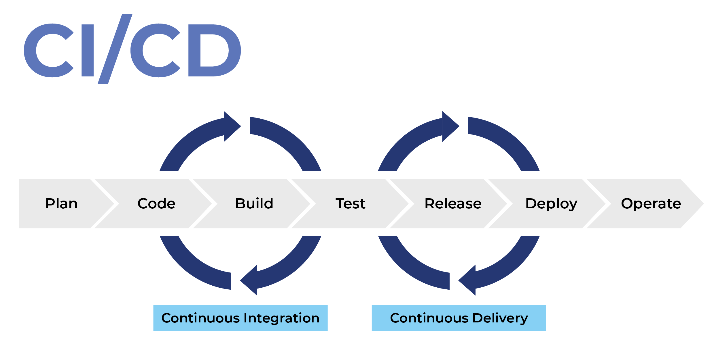

CI/CD Strategies
Instructor: Chris Fulton
Learning Objectives
- Understanding what is CI and CD?
- Working Definition of CI | Working Definition of CD
- Case Studies
- Implementing Continuous Integration(CI) and Continuous Deployment (CD)
- CI Tools: Jenkins | Github Actions | Azure DevOps | Version Control | CI Server
- Communication Tools: Trello | AirTable | Azure DevOps | Focus Groups | Surveys | Web Analytics
- Jenkins Pipeline Configuration:
- Terminology: Build | Build Step | Build Trigger | Plugins
- Team Processes and Software Quality Assurance
- Github Actions Pipeline Configuration:
- Automation: Unit Test | Dev Environments
- Team Processes and Software Quality Assurance
- Web Compliance
- Areas of Web Compliance
What is Continuous Integration (CI)?
Continuous Integration (CI) is the process of automating the build and testing of code every time a team member commits changes to version control.
What is Continuous Delivery (CD)?
"Continuous Delivery (CD) is the ability to get changes of all types including new features, configuration changes, bug fixes, and experiments into production, or into the hands of users, safely and quickly in a sustainable way."
-Jez Humble
What's the difference?
CI/CD Overview

User experience is more than data collection. It's about understanding the motivation behind user needs and striking a strategic balance between expectations and business needs.
Github Actions and AWS
Downfalls of Traditional Delivery Process
Slow Delivery
Long Feedback cycle
Lack of automation
Risky Hotfixes
Stress
Benefits of Continuous Delivery
Fast Delivery
Fast Feedback cycle
Low-Risk release
Flexible release options
Web Compliance
Various Areas of Web Compliance
Data Protection & Privacy Compliance
- Consent & Transparency Requirements
- Data Handling & Retention
- Notifications & Disclosures
Accessibility Compliance (A11y)
- Accessibility Standards
- Accessibility Implementation Strategy and Techniques
- Testing & Site Certification
Security Compliance & Best Practices
- Industry Standards & Frameworks
- Transport & Application Security
- Authentication & Authorization
- Secure Development Practices
Legal & Regulatory Compliance
- E-Commerce & Financial Regulations
- Consumer Protection
- Intellectual Property
Activity
Observing the four areas mentioned in previous slide, select one of the compliance and work through the three steps below
Step 1
Conduct research one of the compliance areas and put together a brief presentation explaining how each bullet point relates to web compliance.
Step 2
Find one or two recent articles that discuss where compliance area was not met.
Step 3
Find a site that demonstrates one of the compliance areas
References
- https://dzone.com/articles/the-3-fast-and-furious-agile-cs